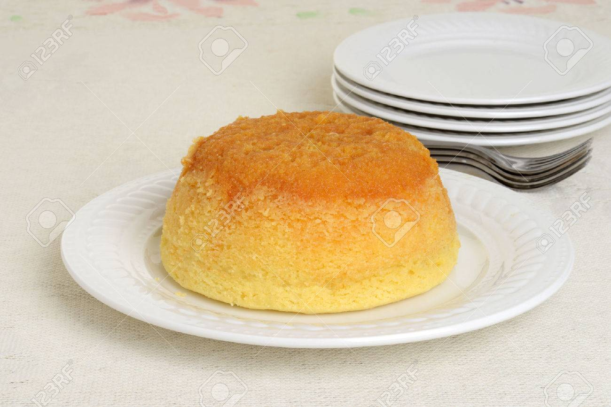

Budín de manzana

Descripción
Aprende a preparar esta receta de Budín de manzana
Por Juan Manuel Herrera en elGourmett
Ingredientes
- Azúcar
- Manzanas verdes
- Manteca
- Huevo
- Harina 0000
- Polvo de hornear
Pasos
- Hacer en una sartén un caramelo y agregar las manzanas peladas en octavos
- Cocinar hasta caramelizar, reservar hasta enfriar
- Mezclar en un bowl manteca fría en cubos, harina, azúcar y con las manos sin dar demasiado calor frotar hasta formar un granulado fino
- Batir con lira a alta velocidad manteca a temperatura ambiente hasta cremar
- Agregar azúcar y seguir batiendo.
- Añadir huevos al batido y mientras se sigue trabajando tamizar harina y polvo de hornear.
- Incorporar harina y despacito integrar
- Enmantecar, enharinar y dejar enfriar los moldes
- Llenar cada molde hasta la mitad, emparejar, agregar las manzanas caramelizadas y cubrir con el resto de la preparación
- Cubrir con el crumble reservado y cocinar a 160ª C por 1 hora